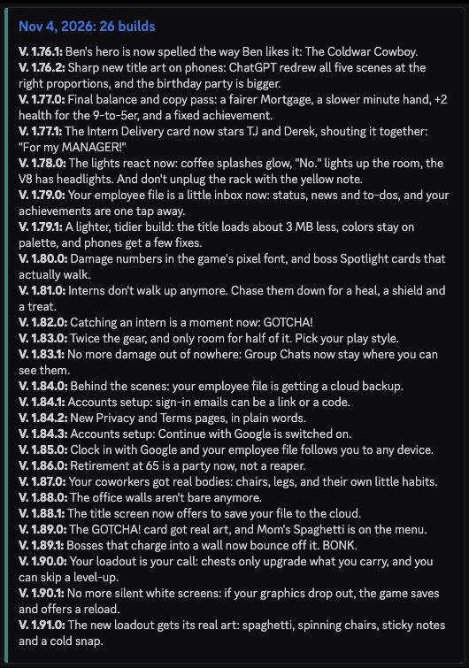
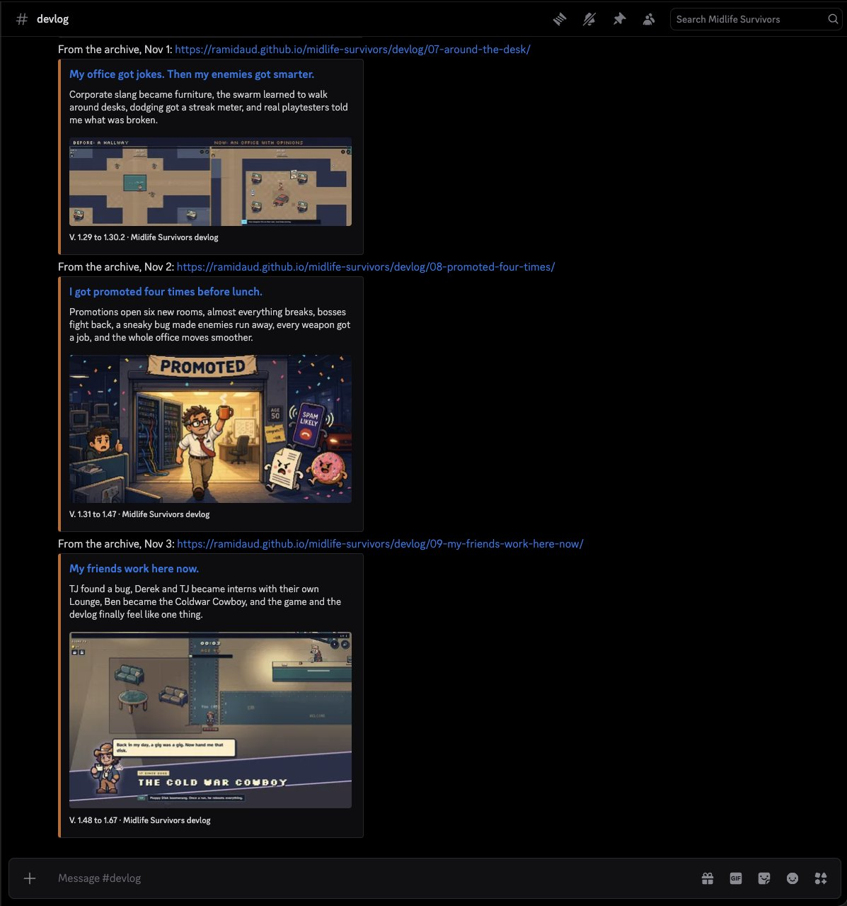
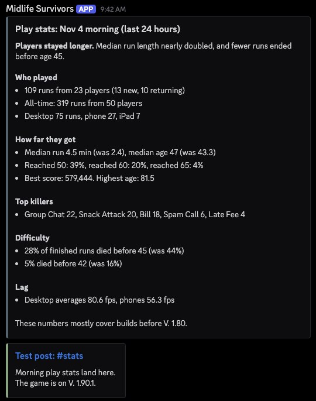
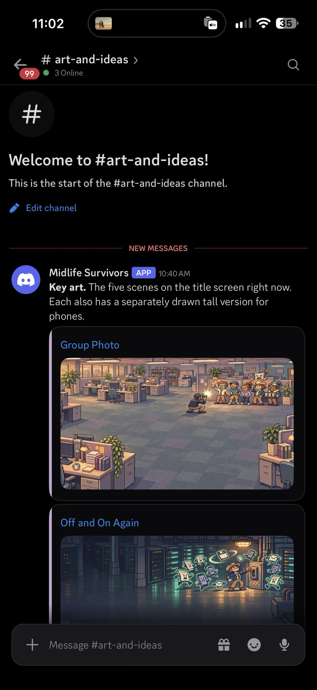

Honestly, I'm not that familiar with Discord. To me, it seems like one of the million ways to chat with people that already exist, like Teams and messages and email and blah, blah, blah. The fact that it's kind of gamer focused is useful. But ultimately, I'm trusting my gut and what my students have to say about it being a good place to collaborate and evolve this game, and hopefully build a community.
That's what I'm really going after here. If that's where community is right now, that's where I want to be.
Setting it up
Setting it up was super easy with help from Claude. The server has a handful of channels: #general for hanging out, #playtest-notes for bugs and "this is too hard," #art-and-ideas, and three channels the game fills in by itself: #changelog, #devlog and #stats.
The game posts its own updates
Here's the trick. Discord lets you make a webhook for a channel: a private link where anything sent to it shows up as a post. The game's code lives on GitHub, and GitHub can run little jobs on a schedule or whenever something changes. So now:
- Every evening, GitHub rounds up that day's builds and posts them to #changelog.
- When a memo goes live, like this one, it lands in #devlog with its cover.
- Every morning, after the play-stats summary, the numbers go to #stats.
- When new art comes in, it goes up in #art-and-ideas.




The webhook links are kept as GitHub secrets, so they never sit in the public code. And GitHub remembers what it already posted, so nothing shows up twice.
The first time I saw the game post its own changelog and stats without me touching anything, I was thrilled. One less thing for me to worry about while I'm working on making the game better.
Out in the open
The stats are the part I like most. Every morning you can see how many people played, how far they got, and what killed them. Group Chats are winning right now.
I love the idea of transparency, and of this being a potential learning tool for others who want to try to build a game. And community at the same time.
What I hope you find there
Say someone finds the server six months from now. I want them to find a thriving community, and a way to check what's been done in the game and how we got there. I think that will be important for other people who want to try the same thing, or something similar, or even people trying to learn how to code, like myself. This has direct implications for what I'm doing in EMAT, and it's a really cool way to explore all that code can do.
Next for the server: your screenshots, your bug reports, maybe a weekly challenge. All of the above.
And while you're here: two new stages are coming after the minimap, the hospital and the home neighborhood. Vote for which one comes first in the quick poll on the devlog's sidebar.
Join the Midlife Survivors Discord. Come say hi, tell me what's too hard, and watch the game update itself.